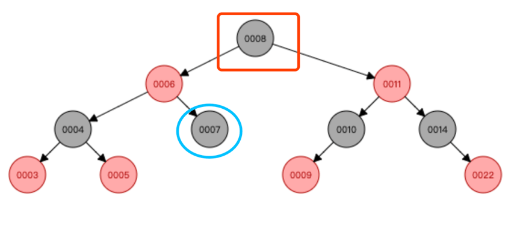
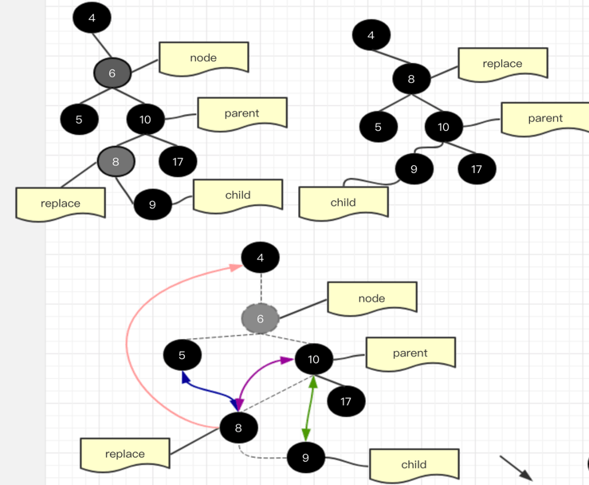
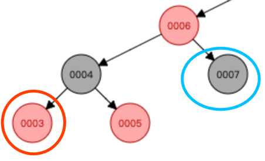
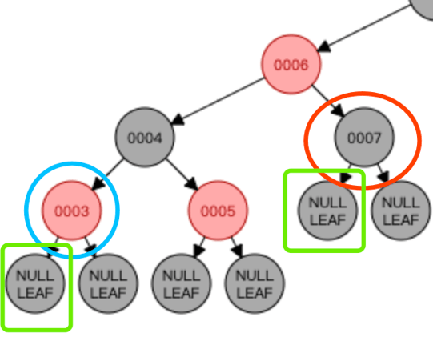
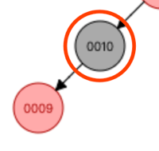
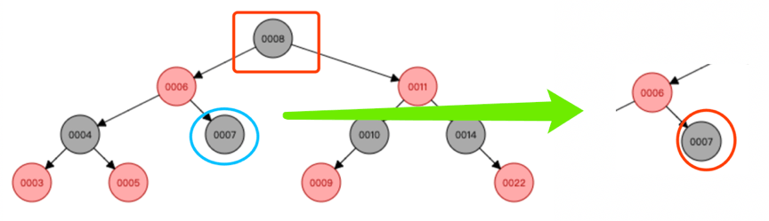
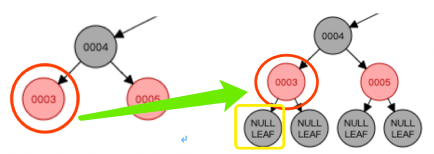

删除节点
红黑树的删除相对于新增节点，显得格外复杂，个人觉得主要是因为判断分支过多，导致刚接触会显得十分头晕，很容易让人放弃。
以下整理结合了网络的一些资料，并结合自己的一些心得体会，希望对大家有帮助。
待删节点的 3 种状态
合三为一，简化操作，全部简化成：
待删节点至多只有一个子孩子（左右无关）
进入下面分支之前，我们约定当前待删节点为 A，A 的前驱节点为 B
1 待删节点有 2 个非空孩子
此情况，我们不直接删除节点 A，而是通过以下
操作步骤：
- 查找节点 A 前驱节点 B（节点 A 左子树最大的节点，后继节点亦可）；
- 将 A 节点的值替换成节点 B 的值；
- 因为前驱节点 B 至多只有一个孩子节点，此时我们面对的是如何删除节点 B 了；
- 现在待删节点变成了 B，而 B 要么没有孩子，要么只有一个孩子；
模拟数据图如下：
假设待删节点是 8，那么他的前驱是 7，我们面对的是如何删除 7 这个节点；

通过前驱节点，待删节点发生了转移，转移到了前驱节点 7，此时待删节点至多只有一个子孩子
（图示：7 节点没有孩子，那么可以想象她有一个黑色的 null 节点）
注意：此时还没有进行删除
如果要硬删？
硬删如下图示，会涉及一些特殊节点，整理如下表格：
| 节点 | 说明 | 备注 |
|---|---|---|
| node | 待删节点 | |
| replace | 后继节点 | |
| parent | 后继节点的父 parent | |
| child | 后继节点的孩 | 只有一个孩子 |
硬删分为2个情况：
以下的图有点复杂，图是之前画的，使用的后继节点，懒癌上身，就不转换了，😄
彩色箭头为需要建立链接的地方，其中有些箭头是双向的
后继节点是待删节点的直接子孩子
如下，假设要删除的是6，他的后继节点是 7，7 的孩子是 child，（ 7 必然没有左孩子）
其删除过程如下图示：
如果后继节点不是待删节点的直接子孩子，如下图示：

2 待删节点没有子孩子
此时待删节点 A 颜色可能是红或黑：

如上图，红色节点 3，黑色节点 7，且他们都没有子节点；
此时，我们想象待删的节点 3 或者 7 有一个虚拟的孩子节点 child，且 child 是黑色的（child 是左或右无关紧要）

通过想象变换：待删除的节点 A 也有一个子节点 child 了，如上图绿色框
注意：此时还没有进行删除
3 待删节点只有一个子孩子
到现在所有的情况都变成了待删节点的 A，只有一个子节点 child（child 有可能是虚拟节点）
汇总如下：
待删节点只有一个子节点图示如下：

待删节点有 2 个非空子节点，需要转换一下，转换过程如下:

待删节点没有子节点，就想象有虚拟节点（虚拟节点为黑色），转换后如下：
